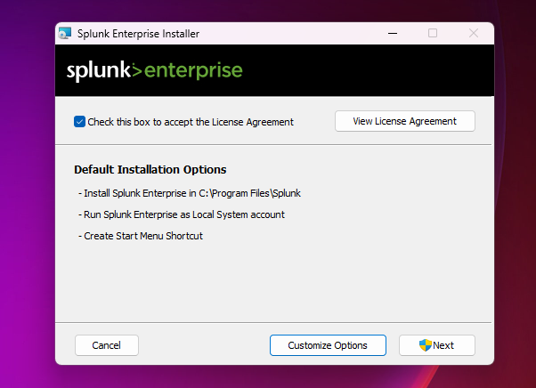
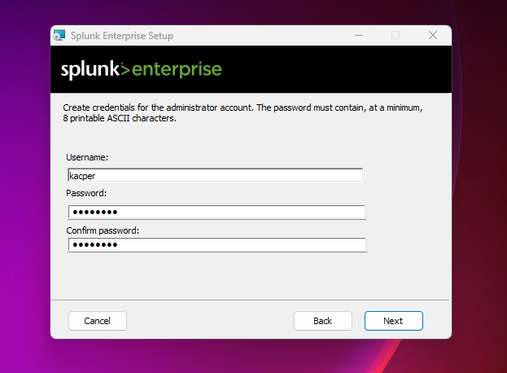
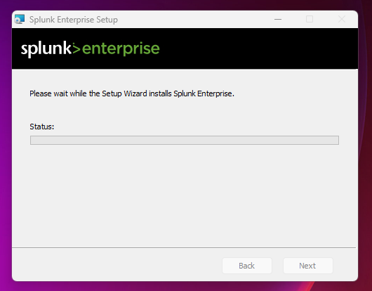
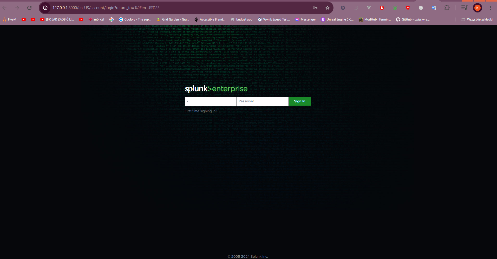
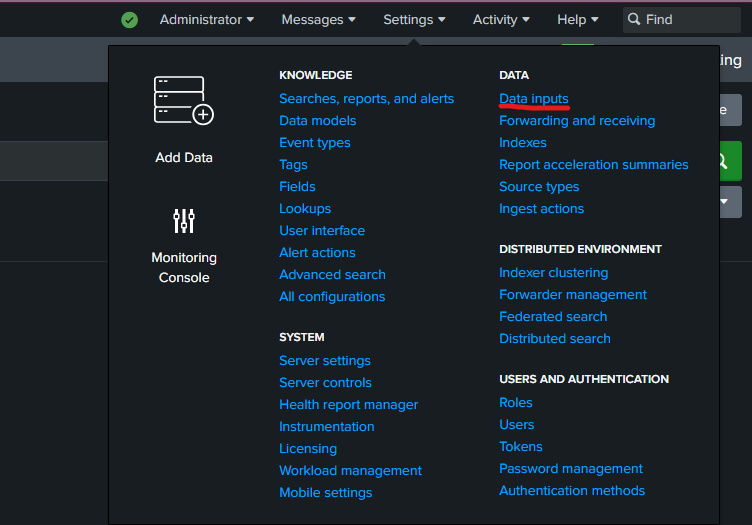
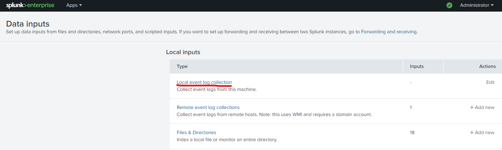
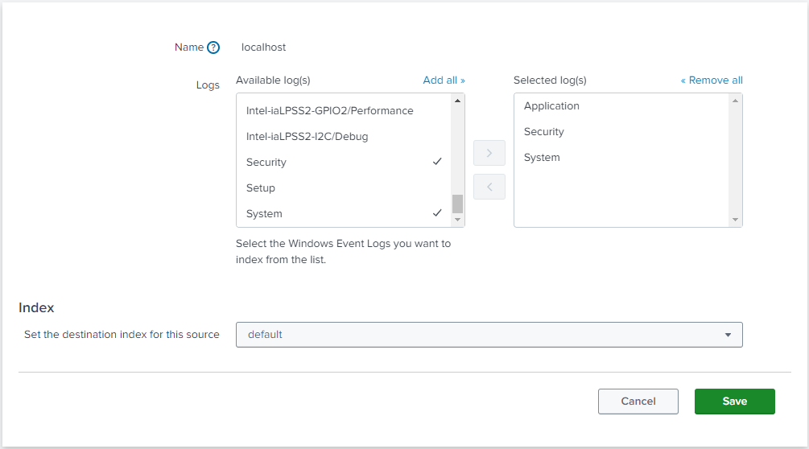
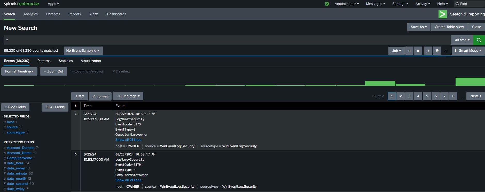

Instalacja i wczytanie danych do Splunka
2024-06-24
Splunk SIEM (Security Information and Event Management) to kompleksowe rozwiązanie, które umożliwia zbieranie, analizę i korelację ogromnych ilości danych z różnych źródeł w celu wykrywania incydentów bezpieczeństwa. Dzięki niemu, specjaliści IT mogą w szybki i efektywny sposób identyfikować potencjalne zagrożenia, analizować zachowania sieciowe i podejmować odpowiednie działania naprawcze.
Splunka należy pobrać z oficjalnej strony: https://www.splunk.com/en_us/download.html

Po pobraniu instalatora należy go uruchomić i przechodzić przez poszczególne etapy zgodnie z instrukcjami widocznymi na poniższych zdjęciach.
W następnym kroku należy podać nazwę konta oraz hasło, które będą służyły do logowania się do Splunka.
 \Po zakończeniu instalacji zostanie otwarta przeglądarka z lokalnym adresem IP na porcie 8000, gdzie znajduje się interfejs Splunka. W tym miejscu należy zalogować się danymi podanymi wcześniej podczas konfiguracji.
Jak widać, instalacja przebiegła pomyślnie i wszystko działa zgodnie z oczekiwaniami. Teraz należy zaimportować dane, które będziemy mogli przeglądać i analizować. W tym celu zaimportujemy dane z lokalnej maszyny, czyli komputera, na którym zainstalowaliśmy Splunka.
Klikając w zakładkę "Settings", otworzy się nowe okno z wieloma opcjami do wyboru. Wśród nich znajduje się odnośnik "Data Inputs", który należy kliknąć.
Następnie przechodzimy w zakładkę "Local event log collection".
Tutaj wybieramy, skąd mają być zbierane logi. W moim przypadku wybieram logi aplikacji, systemowe oraz dotyczące bezpieczeństwa.
Po zapisaniu tych opcji możemy sprawdzić na głównej stronie wyniki wyszukiwania zapytania *, czyli wszystkich logów.
